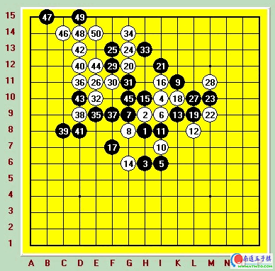

06年河北公开赛对吴昊[图]
#1 06年河北公开赛对吴昊[图] 作者：有志青年 发表时间：2007-3-18 14:06:56

黑：吴昊
白：吴镝
白胜
这是06年7月河北公开赛的一盘对局，这次比赛人数并不多。但汇集了北方连珠界的众多强手，吴昊，曹东，仇云飞等等都参加了这次比赛。这盘对局是第二轮，在这次比赛之前我和吴昊交手三次两负一和处于绝对劣势。吴昊是国内公认的防守最强棋手，非常的沉稳很少出现低级的失误，和他下棋是对耐心的考验，想取胜绝非易事。这次河北公开赛最大的难关也是他了。如果我可以战胜他信心和状态都将达到顶点。很难有人会阻挡住我。
还好开局方是吴昊，这给了我一定程度心理上的优势，在我们这个层次的棋手都不喜欢自己开局，因为那样会由对手来取决先后手。吴昊开出瑞星，这也是比赛最常见的开局，大家都很熟悉了前面就没多想直接下出12-14的变化。这个变化这两年非常流行，我个人选择白12是非常厌恶L7的双跳二的，因为那样棋局将很平稳的渡过中盘进入残局，80%是和棋，这不符合我行棋的风格。而实战的12-14变化非常复杂，中盘很激烈会让我非常的兴奋,我非常的渴望战斗。15？第一次见到，原以为会选择L7的15，我针对那个15专门准备了一些白优势的变化，实战的15让我有些迷茫，16必然是属于不用多考虑的点。17更让我迷惑了，因为黑下面明显没有直接的攻击取胜手段，如果白跟过去局面将会成为黑先手但很平稳的，这符合吴昊的性格。但是我为什么要跟过去呢。白因为16的存在上边有很多的攻击点，最后我选择了实战的18。下完18后吴昊的反应证明他也没怎么碰到过我这么下的。下的挺犹豫的，19强防，20自然的拓展形状。这个时候哪怕白杀不掉也要借到左下去参与防守，21意料中的一手，黑肯定不甘心一路跟着白防守，而21这里黑下的很阴险，可以借用H7的做VCF过渡到E7的做VCF。不过21在我意料之中。所以很快下出22。白右边因为22的存在恰好有一套N10.M10.M11后的上下VCT。黑只能继续防守，但黑无论怎么防守右边黑始终无法形成杀棋，也就无法限制白在左边的进攻。局面在22后彻底倒向白方。23无奈防守24必然的进攻型，白局面非常好，25抑制白继续向左的发展，26把白棋的形状彻底打开了，至此局面白必胜。27.29顽强的防守，可惜这样的攻杀局面我不可能会下出软棋的，30开始黑一路唯一防，35后彻底防不住了，以下到50简单的VCT取胜。
这是我多年来首次战胜吴昊，取胜后心情非常舒畅，状态也是非常的好，在之后的四轮中战胜曹东等人最后全胜取得了这次比赛的冠军。